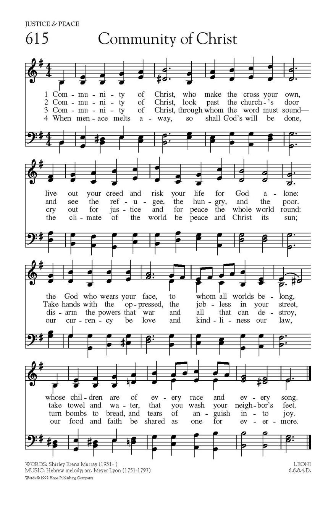

|
|
570基督群體 |
|
Community of Christ, |
|
|
https://www.hopepublishing.com/find-hymns-hw/hw2866.aspx  |
|
|
|
|

新普天頌讚 #570 基督群體 聖詩分析 https://www.hkchurchmusic.org/index.php/component/allvideoshare/video/hup570 - Community of Christ
https://youtu.be/5N1VpCtmAVk
Lyrics by Shirley Erena Murray Performed by Michael Wheaton -
https://youtu.be/U1I4i3IOPBU
| Text: | Community of Christ |
| Author: | Shirley Erena Murray, b. 1931 |
| Tune: | LEONI |
| Arranger: | Thomas Olivers, 1725-1799 |
| Text Information | |
|---|---|
| First Line: | Community of Christ |
| Author: | Shirley Erena Murray, b. 1931 |
| Meter: | 66 84 D |
| Language: | English |
| Publication Date: | 2011 |
| Scripture: | ; ; ; ; ; |
| Topic: | Life and Unity in the Church; Justice and Peace |
| Tune Information | |
|---|---|
| Name: | LEONI |
| Arranger: | Thomas Olivers, 1725-1799 |
| Meter: | 66 84 D |
| Key: | f minor |
| Source: | Hebrew melody |
| Short Name: | Meyer Lyon |
| Full Name: | Lyon, Meyer, 1751-1797 |
| Birth Year: | 1751 |
| Death Year: | 1797 |
Died: 1797, Kingston,
Jamaica.
Pseudonym: Leoni.
Lyon was a chorister at the Great Synagogue, Duke’s Place, London, and a public singer either at Drury Lane or Covent Garden. Subsequently he became the first qualified chazan of the English and German Synagogue in Jamaica.
Sources:
Julian, p. 1151
McCutchan, pp. 27-28
| Short Name: | Shirley Erena Murray |
| Full Name: | Murray, Shirley Erena, 1931- |
| Birth Year: | 1931 |
| Death Year: | 2020 |
Shirley Erena Murray (b. Invercargill, New Zealand, 1931)

studied music as an undergraduate but received a master’s degree (with honors) in classics and French from Otago University. Her upbringing was Methodist, but she became a Presbyterian when she married the Reverend John Stewart Murray, who was a moderator of the Presbyterian Church of New Zealand. Shirley began her career as a teacher of languages, but she became more active in Amnesty International, and for eight years she served the Labor Party Research Unit of Parliament. Her involvement in these organizations has enriched her writing of hymns, which address human rights, women’s concerns, justice, peace, the integrity of creation, and the unity of the church. Many of her hymns have been performed in CCA and WCC assemblies. In recognition for her service as a writer of hymns, the New Zealand government honored her as a Member of the New Zealand Order of Merit on the Queen’s birthday on 3 June 2001. Through Hope Publishing House, Murray has published three collections of her hymns: In Every Corner Sing (eighty-four hymns, 1992), Everyday in Your Spirit (forty-one hymns, 1996), and Faith Makes the Song (fifty hymns, 2002). The New Zealand Hymnbook Trust, for which she worked for a long time, has also published many of her texts (cf. back cover, Faith Makes the Song). In 2009, Otaga University conferred on her an honorary doctorate in literature for her contribution to the art of hymn writing.
I-to Loh, Hymnal Companion to “Sound the Bamboo”: Asian Hymns in Their Cultural and Liturgical Context, p. 468, ©2011 GIA Publications, Inc., Chicago
紐西蘭女詩人茉瑞雪莉（Shirley Murray，1931 生）
她的赞美诗写作始于1970年代，经常将圣安德鲁教堂用作圣诗集的测试场所。 许多不同的作曲家都在她的赞美诗中加入了音乐。她的赞美诗已被翻译成多种欧洲和亚洲语言，并在全球140余首赞美诗中都有代表。 除新西兰外，它们还特别用于北美。
Community of Christ (sTf 681)
Ideas for use
This hymn may be sung in a way that reflects the pattern of command and
suggested response that is repeated in the first three verses.
The first four lines of verses 1-3 can be read as commands to the community of
Christ (e.g. v.1 "live out your creed and risk your life"; v.2 "look past the
Church's door / and see the refugee, the hungry" etc.). The second four lines of
these verses offer ways to live out these commands (e.g. v.3 "disarm the powers
that war"). The final verse presents a hopeful vision of what will result from
responding to the preceding commands.
This pattern suggests the idea of dividing the first three verses between two
groups (ideally, two sides of a congregation - speaking, as it were, to each
other) and then singing the final verse all together.
Also see the article, Life
and Unity in the Church
More information
“Community of Christ” was first sung officially at the General Assembly of the
Presbyterian Church of New Zealand (of which Shirley Erena Murray is a member)
in 1985, to provide a hymn on social justice. It was then taken up in Australia,
and published in the inclusive language collection, Out of the Darkness.
Shirley says that the distinctive layout of the text as seen in Singing the
Faith was first suggested by her publisher, Hope Publishing, when Hope published
her collection In
Every Corner Sing in
1992.
It was Hope’s practice at the time to publish hymn texts with layouts that
respond to the subject and poetry of the words. Arguably, this has the effect of
drawing the singer’s attention to the shifts in metre and rhyme scheme and to
the echoes between phrases. As a result, we are pointed more clearly to the
meaning that the poet intends.
In “Community of Christ”, the printed pattern suggests a mirroring process – the
second half of each verse reflecting the first, but working out in more detail
its implications. So:
v.1 (first half), if we make Christ’s cross our own and live out our belief
(“creed”) then (second half) we become the face of God for the world
v.2 (first half), if our faith is outward looking (“past the Church’s door”)
then
(second half), like Jesus, we get our hands dirty and help those in need
v.3 (first half), if we cry out for justice and peace then
(second half) we need to practice what we preach and “disarm the powers that
war”
v.4 (first half), when God’s will is done then
(second half) our faith and actions are motivated by love and kindliness
Shirley says that the experience of seeing her words laid out in this way was an
important part of her creative development. “Now I am adamant that my own
setting out of the lines is followed. It is essential for poetic sense. It also
provides visual satisfaction and makes for ease of use by the reader/singer.”
She adds that “it is interesting to track the other words set to the tune ‘Leoni’
and see what different editors or typesetters have done”. (See three
other hymns set
to this tune in Singing the Faith.)
She comments: “I agree entirely with Brian Wren that interlining of words
without a separate page for the text is no way to present the sense, as well as
the poetry, of a hymn. It's just a pity that orders of service in churches often
save space by compacting lines and making non-sense of some phrases. This
grieves me, but there it is.”
Myer Lyon (c. 1750, Germany – 1797) Wikipedia
Myer Lyon (c. 1750, Germany – 1797, Kingston, Jamaica), better known by his stage name Michael Leoni, was a hazzan at the Great Synagogue of London who achieved fame as a tenor opera singer in London and Dublin, and as the mentor of the singer John Braham.
Origins and early career[edit]
Myer Lyon was appointed meshorrer (choirboy) to Isaac Polack, hazzan at the Great Synagogue, London, in 1767 'at a salary of £40 per annum, on the understanding that he was to behave as a Yehudi Kasher (i.e. an observant Jew)'.[1] Lyon's origins remain unclear. According to the memoirs of the actor James de Castro he was born in Frankfurt-on-Main and was invited to London by 'the German Jews', where 'a very rich Jew, Mr. Franks, instantly patronised him'. His voice having been brought to the attention of the aristocracy and the actor David Garrick, he was given permission by the synagogue elders to appear on stage (where he adopted the name Michael Leoni), after which he returned to the synagogue and developed thenceforth a dual career.[2]
It is difficult, however, to reconcile this narrative with his known dates. The first record of him is in October 1760 where Garrick refers to him as 'ye boy Leoni' – he sang a role in Garrick's The Enchanter at Drury Lane Theatre which was 'received with great applause'.[3] This suggests that Leoni could not yet have been in his teens at this time, and that therefore the story of his being summoned to London cannot be true. In fact it would be surprising if it were true since there is no evidence that the congregation there had any concerns about musical standards.[4] The fact that the synagogue was only too happy to dock Leoni's pay by £8 a year in 1772, due to its financial problems, also argues against the congregation's supposed dedication to its cantor.[1] It is therefore rather more likely that, wherever he was born, he lived in London from an early age and was talent-spotted, perhaps by Polack, in the synagogue (much as Leoni was later to train his own nephew, John Braham).[5]
Major roles[edit]

{kind=link}
Leoni's twin-tracking in the synagogue and the theatre continued for some while. Between 1770 and 1782 he appeared quite frequently on the stage in London, where he scored great successes in Thomas Arne's Artaxerxes (1775) and, in the same year, as Carlos in Richard Brinsley Sheridan's The Duenna at the Covent Garden Theatre. The Morning Chronicle commented in its notice of The Duenna that 'it can never be performed on a Friday, on account of Leoni's engagement with the Synagogue',[6] an indication of how crucial Leoni was to the piece's success.
Leoni's version of Yigdal[edit]
{kind=link}
Leoni also developed admirers amongst Non-conformist Christians. His reputation encouraged a number of Gentiles, including in 1770 the Methodist Thomas Olivers, to come to the Great Synagogue on Friday nights to hear him. Olivers was so impressed by Leoni's moving rendition of the hymn Yigdal that he determined to write words for a church hymn using the melody. The result was the hymn The God of Abraham Praise, which has had great popularity ever since. In the standard Church of England hymnal, Hymns Ancient and Modern, the tune of The God of Abraham Praise is still titled Leoni, after its source.[7]
Society singer[edit]
Leoni's fame and talents turned out to be valuable in social terms to his congregation. Its wealthier members had taken to purchasing estates on the outskirts of London where they could live fashionable lives and hold soirées to which polite society could be invited. Integral to these was the quality of the entertainments provided, and Leoni was a star of appropriate calibre. In November 1774 he sang at the house in Isleworth of Aaron Franks, who was married to the daughter of another Jewish magnate, Moses Hart. The writer Horace Walpole was in the audience and gave a description which confirms the unusual qualities of Leoni's voice:
Opera promoter[edit]
Eventually in 1783 Leoni's success and his limited remuneration at the synagogue led him to change his career and chance his arm as an opera promoter as well as a performer. A rumour spread that Leoni was eventually dismissed by the synagogue for performing in Handel's Messiah, but the rumour remains unsubstantiated.[9] He chose for his venture Dublin, where he had appeared in 1781. Leoni's 1783 season, undertaken jointly with the composer Giordani, proved, however, to be an utter disaster, and some newspaper reviews remarked on the fading of his voice, although he can only have been in his mid-thirties at the most.[10]
Decline and emigration[edit]
Perhaps by this time audiences were beginning to tire of the unusual timbre which had first brought him popularity. From the financial consequences of this season Leoni never fully recovered. He appeared in 1787 in a benefit performance at Covent Garden Theatre (which was also the first stage appearance of John Braham), and had his last London benefit in 1788.
After this he sailed to Jamaica to become hazzan to the Jewish community in Kingston, where he died in 1797. He is buried at the old Jewish cemetery in Elletson Road, Kingston.
The inscription on his tombstone reads [in Hebrew] "The Great Singer, Myer, the son of Judah, the faithful Kazan of our Congregation. He died and was buried with a good name on a Sunday, the 5th day of Cheshvan, the year 5557." Followed on a second line by [in English] "Sacred to the memory of Mr. Michael Leoni, Principal Reader of our Congregation and one of the first singers of the age, who departed this life highly esteemed on Sunday the 6th day November, 1796, being the 5th day of the Jewish month of Chesvan, Anno Mundi 5557."[11]
Reputation[edit]
Clearly, however, his voice left a strong imprint amongst English music lovers. The satirist John Wilkins, in the year of Leoni's death, wrote:
'Neglected, appall’d, sickly poor and decay’d
See LEONI retiring in life’s humble shade.
‘Tis but few little years since the charm of his voice
Made theatres echo and thousands rejoice'.[12]
Notes[edit]
- ^ a b Roth (1950), 144
- ^ De Castro (1824), 9–10
- ^ Highfield et al. (1970), Leoni, Michael
- ^ Conway (2011), 75–6.
- ^ For a discussion of Leoni's relationship with Braham, see Conway (2007), 38–39, Conway (2011), 78–82.
- ^ Morning Chronicle, 25 November 1775
- ^ Conway (2011), 76–7
- ^ Lewis (1938–83), vol. 35 p. 350, letter of 11 November 1774 to Lord Strafford.
- ^ However Katanka (2013) accepts this as fact.
- ^ Hyman (1972), 85; Walsh (1973) 231-7
- ^ Andrade (1941)
- ^ Williams (1797), cited in Conway (2011), p. 78
References[edit]
- Andrade, Jacob A P M A Record of the Jews in Jamaica – Appendix L: "Partial List on Interments in Various Cemeteries, continued", Jamaica 1941, accessed 15 November 2021
- Conway, David John Braham – from meshorrer to tenor, Jewish Historical Studies vol. 41, London 2007, pp. 37–62 ISBN 978-0-902528-41-3
- Conway, David Jewry in Music – Entry to the Profession from the Enlightenment to Richard Wagner, Cambridge 2011. ISBN 978-1-107-01538-8
- Grove Dictionary of Music and Musicians Leoni, Michael.
- De Castro, James The Memoirs of J. Decastro, Comedian, London 1824.
- Highfield, P. H. et al. (editors) Biographical Dictionary of Actors, Actresses, Musicians in London 1660–1800 (16 vols.), article Leoni, Michael, Carbondale 1970.
- Hyman, Louis The Jews of Ireland from the Earliest Times to the Year 1910, London, 1972
- Katanka, Rabbi David The Great Synagogue, Duke’s Place, London (1690-1977), The US vol 26, number 12 dated 14 December 2013 (11 Tevet 5774) retrieved 31 December 2015
- Lewis, W. S. (editor) Yale Edition of Horace Walpole's Correspondence (48 vols.), Yale, 1937–1983
- Roth, Cecil History of the Great Synagogue, London 1950.
- Walsh, T. J. Opera in Dublin 1705–1797, Dublin 1973
- Williams, John The Pin Basket to the Children of Thespis, London 1797.
https://en.wikipedia.org/wiki/Myer_Lyon
Theme: Church - Ministry | Discipleship | Justice & Peace | Mission | Peace on Earth
SCRIPTURAL REFERENCES
Isaiah 1:17, Isaiah 2:4, Isaiah 61:1-2, Matthew 16:24, Mark 8:34, Luke 4:18-19, Luke 9:23, John 1:14, Romans 13:8